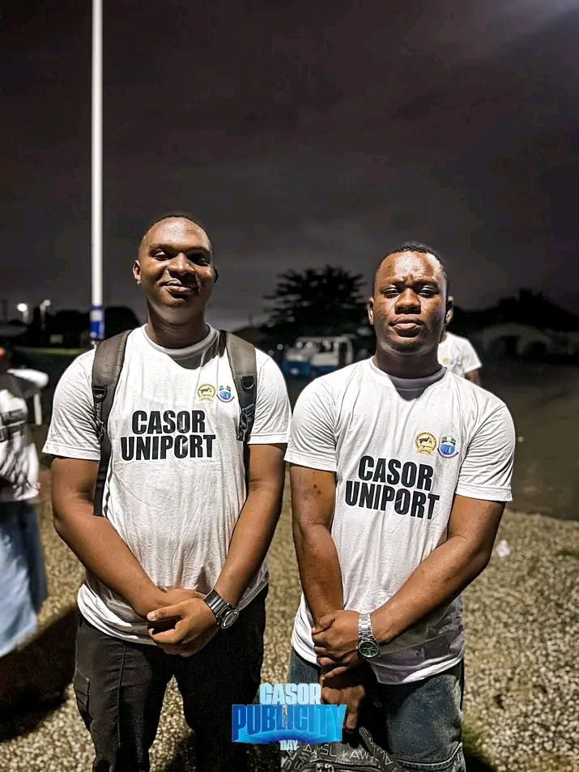

Our Units
Every member has a place to serve. Explore the units below and find where you fit in the CASOR family.
Every member has a place to serve. Explore the units below and find where you fit in the CASOR family.
The administrative house of the fellowship. They lead CASOR, coordinate every unit and keep its records.

Provides overall spiritual leadership and direction for CASOR, representing the fellowship on and off campus.
Supports the President in leading the fellowship and steps in to oversee affairs whenever needed.
Handles CASOR's official records, correspondence and communication, keeping the fellowship's administration in order.
Assists the General Secretary with records, correspondence and administrative duties across the fellowship.
Below are the units we have. Tap any unit to see what it does and who leads it.
Manages CASOR's funds and records, handling contributions, disbursements and financial accountability.
Covers the fellowship in prayer before, during and after every service, program and outreach.
Leads soul-winning efforts on campus, sharing the gospel one-on-one and in small groups wherever students can be reached.
Keeps in touch with new converts and visitors after outreach, helping them settle into fellowship and grow in faith.
Plans and runs CASOR's outreach programs, taking the fellowship's love and message beyond campus to hostels and the wider community.
Leads and shepherds the brothers' and sisters' fellowship groups, guiding discipleship and accountability within each.
Looks out for the wellbeing of brothers and sisters, checking in, following up and meeting practical needs within the fellowship.
Coordinates weekly Bible study sessions, helping members dig deeper into scripture and grow in personal study.
Handles media coverage, design and getting the word out about everything CASOR is doing, online and on campus.
Manages CASOR's public image and external relations, representing the fellowship's voice to outside bodies and guests.
Oversees hall pastors across the male and female hostels, coordinating morning devotions in every park.
CASOR UNIPORT's choir, leading the fellowship in worship and preparing hearts through song for every service and special program.
Coordinates the planning and logistics behind every service and program, from setup to sound, so everything runs smoothly.
Uses drama and skits to bring gospel messages and Bible stories to life during services and outreach programs.
Documents CASOR's activities through press coverage, while supporting members academically, including through the Library.
CASOR's discipleship arm, nurturing new members in the foundations of the faith and grounding them in the Word.
A dedicated fellowship for final year students, preparing them spiritually for life and ministry beyond the university.
No unit matches that search.
The brethren leading each unit this session.





This Session
Serving under the Male and Female Park Coordinators, shepherding morning devotions hall by hall. This list is updated each session.
Loading...
Loading...
The Admin House of every past administration: President, Vice President, General Secretary and Assistant General Secretary.
View Past Admin HousesThe fathers, mothers and friends who watch over the fellowship.
Provides spiritual oversight and covering for CASOR, guiding its leadership with wisdom and experience.
Offers motherly guidance and pastoral care to the fellowship, supporting members through their university journey.
Links CASOR UNIPORT with the district, coordinating with the wider Christ Ambassadors body and its programmes.
Leads the CASOR alumni body, keeping past members connected and supporting the fellowship today.